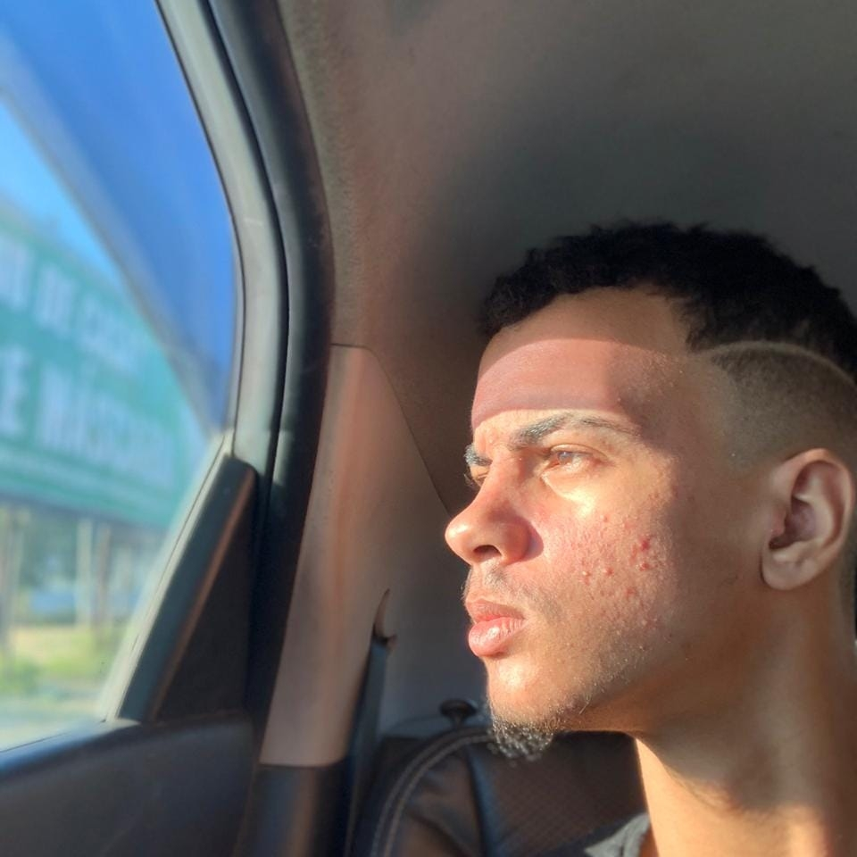

Meu Currículo
Objetivo Profissional:
Meu objetivo é me tornar um profissional competente para realizar quaisquer taréfas que me forem atribuídas.
Educação:
-
Ensino Médio Completo
Escola Togo Renan - 2018
-
Curso de Programação Full Stack
Plataforma DankiCode - 2020 (Em Andamento)
-
Curso The Complete Full-Stack Web Development Bootcamp
Plataforma Udemy - 2025 (Em Andamento)
Experiência Profissional:
-
Pintor Automotivo - Oficina XYZ
Nov 2021 - Presente
- Reparação e pintura de veículos
- Acabamento e polimento de superfícies
- Atendimento a clientes para avaliação de serviços
Habilidades:
- HTML5, CSS3 e JavaScript
- Git e GitHub
- Desenvolvimento Responsivo
- Resolução de Problemas
- Trabalho em equipe
- VS Code, Sublime Text
Certificados:
- Curso Full-Stack - Plataforma DankiCode (2020)
Sobre Mim